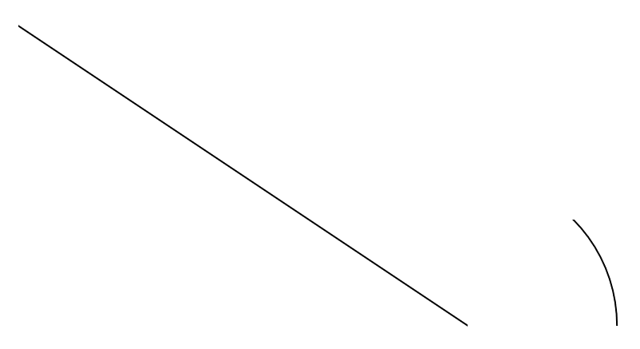

Tutorial¶
Typically, in Splipy, you make geometries by building curves from points, surfaces from curves, and volumes from surfaces. Let us look at some easy examples.
Hello, Splipy¶
from math import pi
import splipy.curve_factory as cf
from splipy.io import G2
line = cf.line((0,0), (-3,2))
arc = cf.circle_segment(pi/4)
with G2('tutorial.g2') as f:
f.write([line, arc])
This creates two curves, a straight line from the origin to the point (–3, 2) and a circle segment covering one eight of the unit circle. The straight line will be linear and non-rational, while the circle segment will be cubic and rational. The code then writes these objects to a file in G2 format. If you open this file in a G2-compatible viewer, you can see the geometry.
{kind=link}
Let us create a surface between these curves. For this, we will use the
SurfaceFactory.edge_curves() function.
From now on, we will omit the output code.
import splipy.surface_factory as sf
surface = sf.edge_curves(line, arc)
{kind=link}
We can refine this surface without changing the geometry. This introduces five new knots in each existing nontrivial knot interval.
surface.refine(5)
{kind=link}
Objects can be subjected to affine operations in both mutating and non-mutating ways.
surface.translate((2,0,0)) # sets dimension to 3, and mutates
surface = surface + (2,0,0) # creates a new object
surface += (1,0,0) # mutates
surface.rotate(pi/2, (1,0,0)) # mutates
Let us turn this surface into a volume by revolving it around the z axis.
import splipy.volume_factory as vf
volume = vf.revolve(surface)
{kind=link}
The NTNU logo¶
In this section we will try to recreate the logo of the Norwegian University of Technology and Natural Science.
We begin by creating two temporary lines to illustrate the origin and the axes, a circle segment and a straight line. We then append the latter two.
x = cf.line((-.5,0), (.5,0))
y = cf.line((0,-.5), (0,.5))
c1 = cf.circle_segment(pi/2)
c2 = cf.line((0,1), (-4,1))
c1.append(c2)
{kind=link}
We now displace this curve, make a clone which is rotated by 90 degrees, and append these two curves.
c1 += (2,2)
c2 = c1.clone().rotate(pi/2)
c1.append(c2)
{kind=link}
And finally we clone and rotate once more, to close off a rounded square.
c2 = c1.clone().rotate(pi)
c1.append(c2)
{kind=link}
To turn this into a surface we can use SurfaceFactory.thicken(). We
will thicken with a radius of 1, which is equal to the radius of the four corner
segments, so that the interior of the square will get sharp corners.
s1 = sf.thicken(c1, 1)
{kind=link}
Let us refine a bit, and add a disc in the middle.
s2 = sf.disc(1.5)
s1.refine(2)
s2.refine(3)
{kind=link}
The SurfaceFactory.disc() function supports two modes. Let us try
the other one.
s2 = sf.disc(1.5, 'square')
{kind=link}
Much better!
Flow around a cylinder¶
A typical problem in fluid dynamics involves flow around a cylinder. Let us try
meshing this. We can use CurveFactory.circle() for the interior circle
and CurveFactory.n_gon() for the surrounding square.
circle = cf.circle(1.0)
boundary = cf.n_gon(4) * 4 # scaling
{kind=link}
We can use SurfaceFactory.edge_curves() to mesh the enclosed space. Let
us also rotate by 45 degrees to align the square with the axes.
surface = sf.edge_curves(circle, boundary)
surface.rotate(pi/4)
{kind=link}
We are of course not restricted to squares. What about hexagons?
boundary = cf.n_gon(6) * 2.4
{kind=link}
Hm... this reminds me of something. If we continue as before, and extrude the resulting surface...
volume = vf.extrude(surface, 2)
{kind=link}
We get a nut!